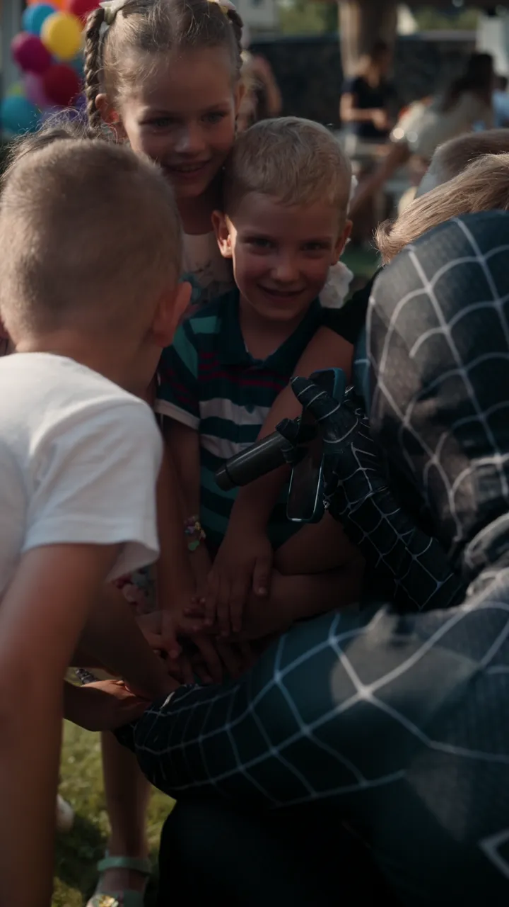
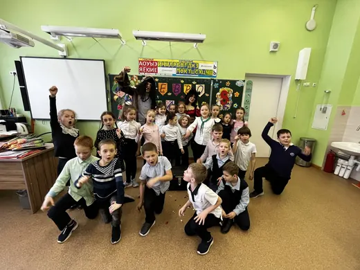
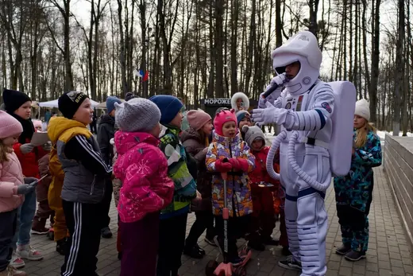
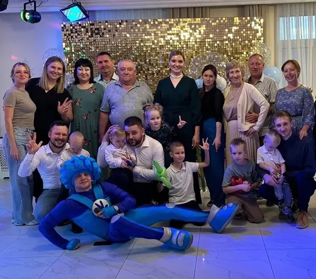
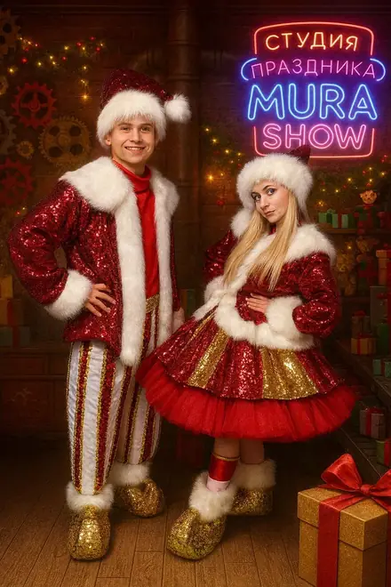

Студия праздника MURA SHOW. Ведущий приезжает в образе, держит программу час-два и уходит вместе с тортом — а после остаются 600 фотографий, как у нас в каталоге. Все кадры на сайте сняты на настоящих праздниках студии.
Наро-Фоминск, Апрелевка, Селятино, Верея, Кубинка. Отвечаем в день обращения.
Анимационная программа — 5 500 ₽ в час, VIP-костюм — 6 000 ₽. Шоу берут поверх программы или отдельным блоком.

300 литров пенного раствора и тюнингованная пушка в виде акулы — фирменная деталь студии.
15 000 ₽
Ведущий работает с жидким азотом при температуре −196 °C: облако дыма стелется по земле, из бутыли поднимается вулкан выше человеческого роста.
15 000 ₽
Формат для тех, кому аниматор в костюме уже мал.
15 000 ₽
Полчаса, за которые ведущий успевает показать пузыри всех размеров — от тех, что снимаются с двух пальцев, до купола, куда целиком помещается ребёнок.
7 000 ₽ · 30 минут
Свет гасят, включают ультрафиолет — и в темноте светятся краска на лицах, браслеты и палочки.
6 000 ₽
Коробка с прозрачной стенкой: участник запускает руки внутрь и на ощупь угадывает, что там.
7 000 ₽ · 30 минутГерой приходит с миссией и ведёт детей по ней: знакомство, задания, соревнования, вынос торта. К каждой активности идёт подводка, поэтому дети не «играют в игры», а помогают Человеку-пауку или чинят технику вместе с Фиксиками.

Костюмы отдельно хвалят в отзывах — поэтому показываем их крупно и без стоковых картинок.
Вы говорите повод, дату, возраст и сколько будет детей. Андрей отвечает в день обращения и держит дату за вами.
Выбираем героя и активности: чем увлечён именинник, кто из гостей стесняется, что нельзя есть.
Ведущий приезжает заранее, раскладывает реквизит и выходит к детям уже в образе.
Знакомство, игры, конкурсы с реквизитом — час, полтора или два. Чем дольше идёт программа, тем плотнее её наполнение.
Пена, азот, пузыри или дискотека — в зависимости от того, что заказали.
Вынос торта и фотосессия с героем в финале.
Одиннадцать отзывов во ВКонтакте, все с оценкой пять. Здесь четыре, остальные — на странице отзывов.
Андрей спас день рождения. Я видно в каком-то помутнении перепутала все время, одно наложилось на другое, в панике дозвонилась до Андрея, успокоил, нашел время в субботу, и спас день рождения, вернее он СДЕЛАЛ этот первый юбилей моей дочери незабываемым. У Андрея есть фишки на каждый возраст, подход к каждому ребенку и умение объединить их в общее дело.
Сыну на 4 года заказывали человека паука. Первый наш опыт с аниматором и такой удачный! С Андреем быстро согласовали детали и дату, отвечал сразу день в день, что в наше время редкость. Сын поначалу испугался, но со временем раскачался, в конце уже обнимался с человеком пауком. Андрей классно держал внимание детей, было весело и им, и взрослым.
Неоднократно на праздновании дней рождения моих детей он творил настоящее волшебство. 2–2,5 часа держать и детей, и взрослых на пике эндорфинов, приковывать внимание малышей — это могут далеко не все аниматоры нашего города, единицы.
Благодаря Андрею дни рождения моих детей прошли на ура! Костюмы шикарные, дочери очень понравился единорог. А программа для детей с 8 лет тоже шикарная.

Главная проблема домашнего дня рождения — не еда и не шары, а полтора часа, которые дети не знают, чем занять.

Выпускной в саду — это два десятка детей, столько же родителей и воспитатели, которых обычно забывают включить в сценарий.

Классу на 25 человек нужен не аниматор в костюме, а ведущий, который удержит внимание и не даст празднику развалиться на кучки в телефонах.

На массовом мероприятии сложность в масштабе: сто-двести детей одновременно, случайная публика и площадка, которую видишь впервые.

На семейном корпоративе дети — самая уязвимая часть: у взрослых своя программа, а детям через полчаса становится скучно, и они начинают наматывать круги по залу.

В декабре хороший ведущий занят на месяц вперёд, а 30 и 31 декабря разбирают ещё в ноябре.
С трёх лет. Для трёх-четырёхлетних программа короче и проще: больше музыки, простые правила, никаких длинных объяснений. Школьникам, наоборот, нужны соревнования и сюжет, а тем, кто старше десяти, лучше заходят лукотаг и активные шоу.
Дома, в кафе, в детских садах и школах, на площадках-партнёрах и на улице. Пенная вечеринка и лукотаг — только на улице, для них нужна площадка. Остальные форматы работают в помещении.
Считаем по часам: минимум — час, чаще берут полтора-два. По опыту студии, чем дольше идёт программа, тем плотнее она наполняется: за час успеваешь только знакомство и разгон.
Дату держим по договорённости. Точные условия предоплаты и отмены Андрей проговаривает при бронировании — позвоните или напишите в WhatsApp.
Да: Апрелевка, Селятино, Верея, Кубинка и ближайшие посёлки. Стоимость дороги зависит от адреса, её называют при заказе.
Место, где дети смогут двигаться, розетка и предупреждение об аллергиях, если планируется еда или грим. Реквизит, музыку и расходники студия привозит свои.
Напишите, какой праздник и когда — Андрей ответит и скажет, свободно ли время. Отвечает в день обращения.